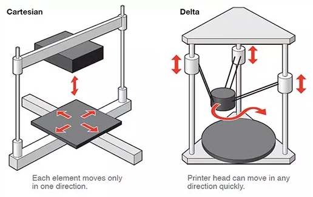
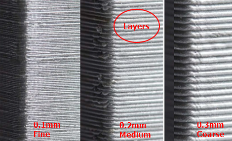
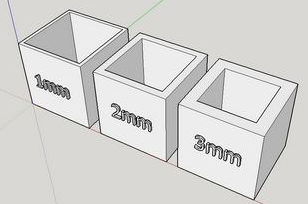
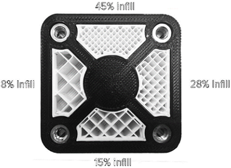
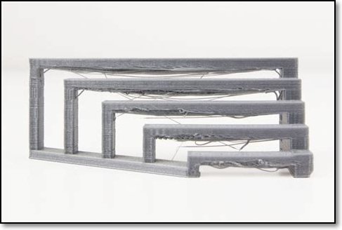
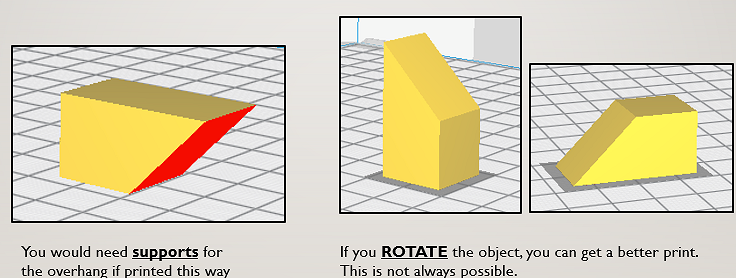
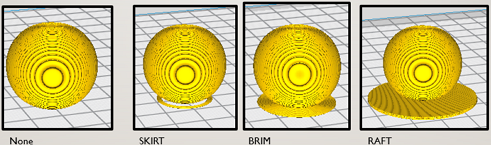

Introduction
3D Printing is the construction of a three-dimensional object from a digital model. It allows the public to gain access to manufacturing and is able to create almost anything with 3D printing. It is ideal for rapid prototyping to give the designer and client a feel of how the product will be like by printing an actual model. However, the process is very slow compared to manufacturing as it takes much more time to print a model and the material used for 3D printing does not have the strength that may be required in the application of the product.
The 3D printing process can be broken down to several stages.
- Creating and designing a 3D CAD model digitally (i.e. fusion), or using a previously designed model from archives (eg. Thingiverse)
- Converting it into a 3D representable file (such as .stl)
- Slicing the 3D CAD model into layers that would be the printable level in the X-Y coordinate using a slicing software
- Converting the layers into instructions for the 3D printer (gcode)
- The 3D printer creates the 3D object by printing the layers one by one, moving up one layer at a time in the Z-axis
There are many types of 3D printers that uses different material and ttechniques to print an object. They each have their own advantages and disadvantage, such as the limit of material available, print speed and accuracy etc. Some of the common types are listed below
- FFF (Fused Filament Fabrication) where a filament is heated/fused and deposited a layer at a time.
- SLA (Stereolithography) uses a photochemical process which places a chemical/resin and uses a light source to harden each layer.
- SLS (Selective Layer Sintering) is a technique that uses a laser as a power source to sinter/fuse powdered material at points to create a solid structure.
FFF 3D printers can also exist in 2 different types, Cartesian and Delta
The important parts to note are
- Hot End of the extruder: Temperatures can reach in excess of 180 degC and can easily burn your fingers
- Print bed: Heated to 60 degC in order for the fused filament to adhere. You have to be extra careful with the bed to keep it as level as possible and prevent mis-alignment of the print bed as it can cause the print job to fail.
- the filament is kept in a spool at the side/back of the printer, ensure that the feed is constant and free of obstruction.
Characteristics of a 3D print
3D printers allow you to tweak characteristics for the 3d Print. Some of these characteristics include:
- Layer height (extruded filament thickness): The height of each printed layer of the 3D print. Thinner layers give finer, smoother surface and more accurate prints but takes longer to print. Ranges from 0.1~0.4mm for a 0.4 nozzle (typical 0.2mm) 
- Wall thickness: Number of strands required for the thickness of the wall. If the Layer Height = 0.2mm, then a wall thickness of 1mm will require 5 strands laid side-by-side. Thicker walls give stroger prints but longer time to print. Typical wall thickness is min 0.8mm 
- Infill percentages: Amount of material in the internal cavities. Higher infills give more strength, but take longer to print. You can select different infill patterns. Typical infills 10~18%. 
- Bridging: Refers to the prints between 2 points that have no connection to each other where there is no layer below the area between the two points when bridging. Hence, printing must be done in the air so that the gap can be bridged. There is a limit before the print fails and sagging strands appear 
- Overhangs: The limit where there is insufficient support to print angled elements. Most printers can handle an overhang of 45 deg
- Supports: Supports extra material printed to aid in printing overhangs that exceed the bridging and overhang limit and are removed after the print is complete. Printing supports add to the print time as well as the touch-up and finishing time to the model. You can change the object orientation to reduce the amount of supports used 
- Bed adhesion: Prints extra material to help adhere the print on the print bed
- Skirts are used to provide an outline and gives no adhesion
- Brims allow some adhesion from the print perimeter to the printer bed
- Rafts are full platforms on which the 3D print is placed. Print adhesion is onto the raft instead of the bed.
